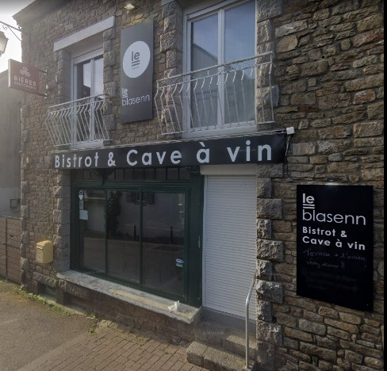
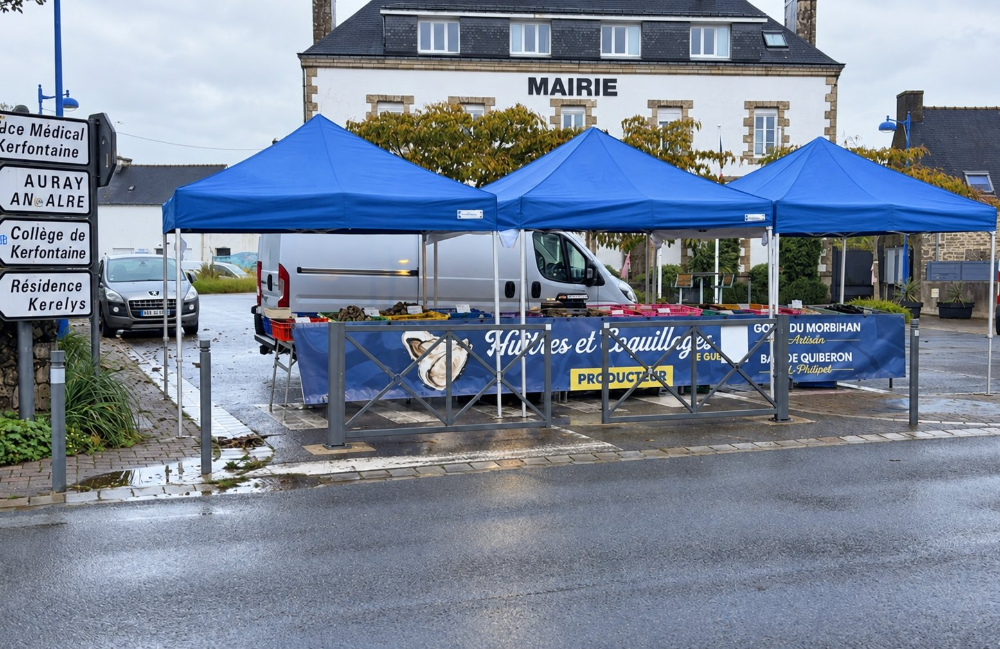
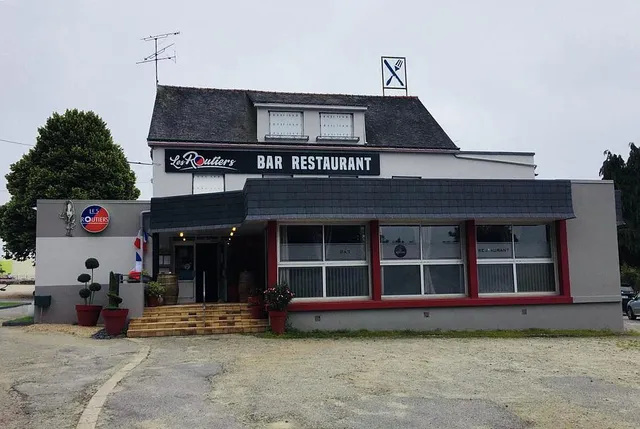
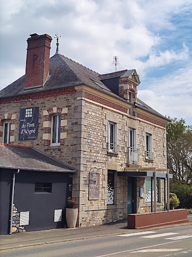
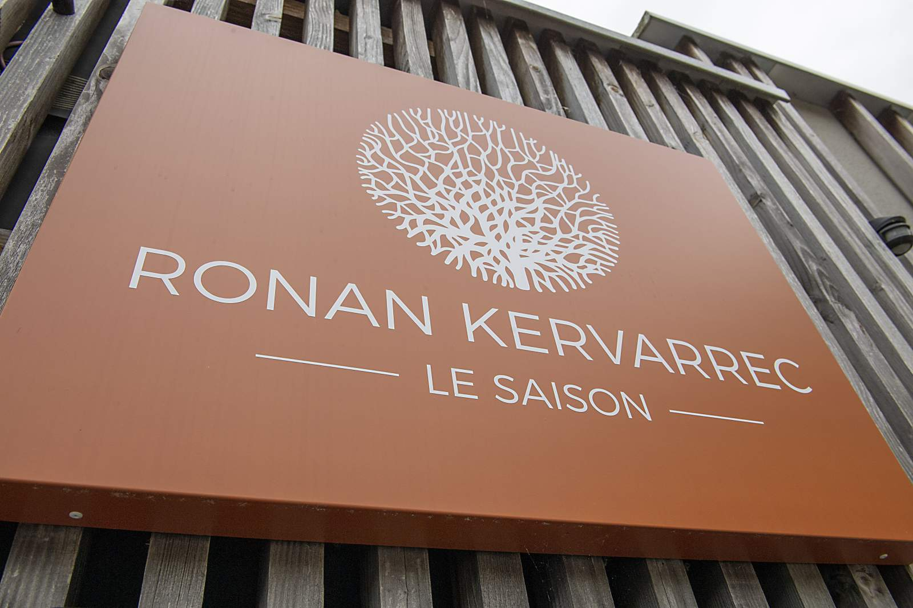

LB
Le Blasenn
Bistrot & Cave à vin
Crac'h — 3 Place de l'Église, 56950 Crac'h
Vente directe producteur
Retrouvez-nous sur les marchés de Bretagne Sud, ou directement à notre chantier de Crac'h.
Retour à l'accueilVente directe au chantier
Cliquez sur un point de vente dans la liste pour le retrouver sur la carte.

Tous les jeudis de 7h à 13h — Place de l'Église
Frédéric — 06 61 73 74 23
Voir sur la carte
Tous les vendredis de 7h à 13h — Place du Marché
Frédéric — 06 61 73 74 23
Voir sur la carte
Tous les samedis de 7h à 13h — Place des Lices
Jimmy — 07 82 45 73 53
Voir sur la carte
Tous les dimanches de 7h à 13h — Place de la Mairie
Frédéric — 06 61 73 74 23
Voir sur la carte
Tous les dimanches de 7h à 13h — Place de la Mairie
Frédéric — 06 61 73 74 23
Voir sur la carteRetrouvez nos huîtres à la carte des plus belles tables et bistrots de la région :

Bistrot & Cave à vin
Crac'h — 3 Place de l'Église, 56950 Crac'h

Bar Restaurant
Ploërmel — 24 avenue Georges Pompidou, 56800 Ploërmel

Restaurant gastronomique
Noyal-sur-Vilaine — 8 Le Pont d'Acigné, 35530 Noyal-sur-Vilaine

Restaurant gastronomique
Saint-Grégoire — Rennes — 1 impasse du Vieux Bourg, 35760 Saint-Grégoire